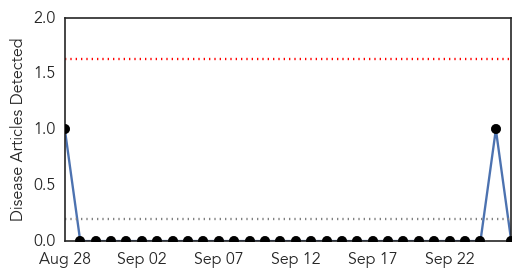
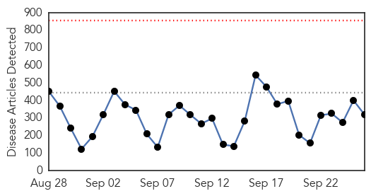
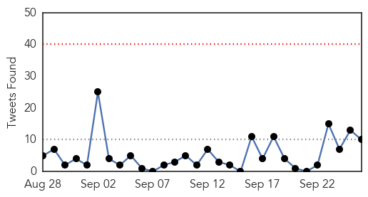
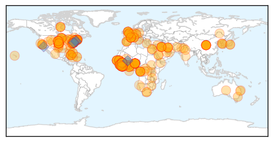

Bubonic Plague
30-Day Web Trend
0 alerts, 0 warnings

30-Day Twitter Trend
0 alerts, 0 warnings

Article Locations

Article Confidences

Top Articles:
-
No articles found for Sep 26, 2014
Top Tweets:
-
No tweets found for Sep 26, 2014
Ebola
30-Day Web Trend
0 alerts, 0 warnings

30-Day Twitter Trend
0 alerts, 0 warnings

Article Locations
Article Confidences

Top Articles:
- 1.000
- Sierra Leone is forcing its citizens into isolation to fight Ebola
- 1.000
- UMCOR, UMC Health Boards Respond to Ebola
- 1.000
- Sierra Leone quarantines 2M in fight against Ebola
- 1.000
- This Ebola outbreak could be here to stay
- 1.000
- UGA community holds conversation on Ebola virus
- 1.000
- Ebola mission is uncharted territory, MUSC experts say
- 1.000
- Evidence Suggests Ebola Is A Bioweapon Manufactured By The US
- 1.000
- 'Collateral' Death Toll in Ebola Outbreak Expected to Soar
- 1.000
- Ebola's challenge to the world
- 1.000
- Ebola victims in African village 'rise from the dead' causing panic and fear among locals
- 1.000
- These Interactive Graphs Show What The Future Of The Ebola Outbreak May Look Like
- 1.000
- Death Toll From West Africa Ebola Outbreak Passes 3,000
- 1.000
- Feature: Ghana prepares to deal with possible Ebola outbreak
- 1.000
- Ebola spread to skyrocket along with deaths from other diseases
- 1.000
- Ebola Spreads, World Leaders Band Together
- 1.000
- 12 Alarming Numbers About The Ebola Crisis
- 1.000
- Ebola deaths in West Africa 'pass 3,000'
- 1.000
- Obama: World must do more to combat Ebola
- 1.000
- Sierra Leone cordons off 3 areas to control Ebola
- 1.000
- Sierra Leone quarantines 2 million to fight Ebola
- 1.000
- World must do more to battle Ebola in West Africa - Obama
- 1.000
- Ebola death toll nears 3000 in West Africa
- 1.000
- Ebola Outbreak: Dr. Richard Besser Reveals Safety Tips En Route to Liberia
- 0.999
- 3rd U.S. aid worker infected with Ebola released from hospital
- 0.999
- Ebola fighters charge ahead to deal with crisis
- 0.999
- Ghana: Japan and Samsung Electronics join West Africa's ebola fight
- 0.999
- Zambia's Ebola case tests negative
- 0.999
- West Africa pleads for faster help to fight Ebola Republican American
- 0.999
- IMF approves $130 million for Ebola-stricken countries
- 0.999
- Ebola Outbreak: Dr. Richard Besser Reveals Safety Tips En Route to Liberia
- 0.999
- Médecins Sans Frontières (MSF) International
- 0.999
- Ebola: 'Magic Bullets' or Current Tools?
- 0.999
- Sierra Leone Puts A Million People Under Quarantine As Situation Deteriorates
- 0.999
- Doc cured of Ebola may need 3 months to recover
- 0.999
- Online News and Information Portal for Ghanaians In Diaspora
- 0.999
- Ebola: Evading epidemic
- 0.999
- Ebola Deaths In West Africa 'Pass 3,000'
- 0.999
- Obama calls for more action to tackle Ebola
- 0.999
- FM calls for action on Ebola
- 0.999
- Sudan Vision Daily
- 0.999
- Cuba sending 300 more doctors, nurses to fight Ebola in West Africa
- 0.999
- Ebola fighters charge ahead to deal with crisis
- 0.999
- Cuba pledges 300 more doctors, nurses to combat Ebola
- 0.999
- UPDATE 1-West Africa Ebola death toll passes 3,000 -WHO
- 0.998
- Obama, at UN, calls Ebola a threat to global security — Health — Bangor Daily News — BDN Maine
- 0.998
- More hands needed for Ebola battle - Africa
- 0.998
- Stricken nations desperately wait for global aid
- 0.998
- 1.2 million Sierra Leoneans quarantined over Ebola - News
- 0.998
- Ebola Outbreak Could Be Largest Ever « CBS Minnesota
- 0.998
- W/Africa Ebola deaths beyond 3000
Showing top 50 articles...
Top Tweets:
- 0.997
- RT: SierraLeone Ebola - 26Sept: 35new cases: P/Loko18, F/T6 Tonkolili5, W/A R 4, Bo1, Kenema1. Total cases 1,920, deaths 529…
- 0.993
- Sierra Leone expands quarantine restrictions as Ebola epidemic worsens. Ebola http://t.co/l5bfl4mSg0
- 0.954
- says Ebola is stabilizing in Guinea but situation in Sierra Leone is still deteriorating Ebola http://t.co/PA5y5ISpEr
- 0.917
- Second Ebola outbreak numbers as of September 22. endebolanow ebola congo http://t.co/pdF5zt6W51
- 0.895
- Dr. Korkor: the stigma on Ebola survivors is severe because people in Liberia have been told that no one survives Ebola ghsanextgen
- 0.871
- Dr. Korkor: we should be able to break the chain of Ebola infection with Ebola Treatment Units, supplies, and training in infection control
- 0.867
- Ebola is straining the already weakened health systems in West Africa: http://t.co/TnMp7BI9Ok
- 0.853
- Ebola cases are unfortunately still growing exponentially. Please share the correct information! endebolanow ebola http://t.co/Af5SqDTsff
- 0.836
- Ebola a critical issue for world community. Affects ability to control virus & provide basic health, govt functions. http://t.co/IxkHCQDDnU
- 0.746
- Obama calls Ebola threat to 'Regional, Global Security' at UN Summit. Ebola http://t.co/peg6QovAcB
- 0.695
- .@MSF has 3048 staff on the ground & has sent 553 tonnes of cargo to West Africa since the beginning of the Ebola response. EbolaChallenge
- 0.690
- World Bank doubling funding for Ebola to nearly $400 million. Ebola http://t.co/jRvdjUi8ky
- 0.674
- Determined woman saves three of her family members from Ebola. Ebola http://t.co/otpuBtakwc
- 0.669
- The Obama administration urged the international community Friday to view outbreaks of Ebola, MERS and other... http://t.co/4V3HVDAc5S
- 0.666
- Liberian Minister warns Ebola crisis could cause country to “slip back into conflict” as impact spreads. Ebola http://t.co/MGgQ8JyLeG
- 0.666
- GHSAgenda mtg is critical for increased international commitment & action on current Ebola epidemic in W. Africa http://t.co/UCy1eBzCQR
- 0.655
- Some Ebola victims are being turned away due to a severe shortage of medical treatment http://t.co/vcHgUsZvUa
- 0.570
- US can&39;t tackle Ebola epidemic alone: Obama http://t.co/ypV38ih9wA
- 0.530
- RT: Despite public health messages and Ebola awareness campaigns, bats remain a prized delicacy in Bangui CAR http://t.co/k…